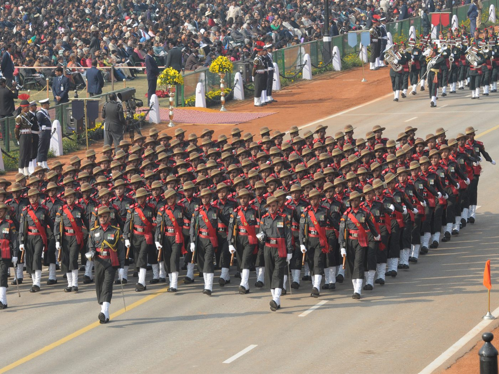
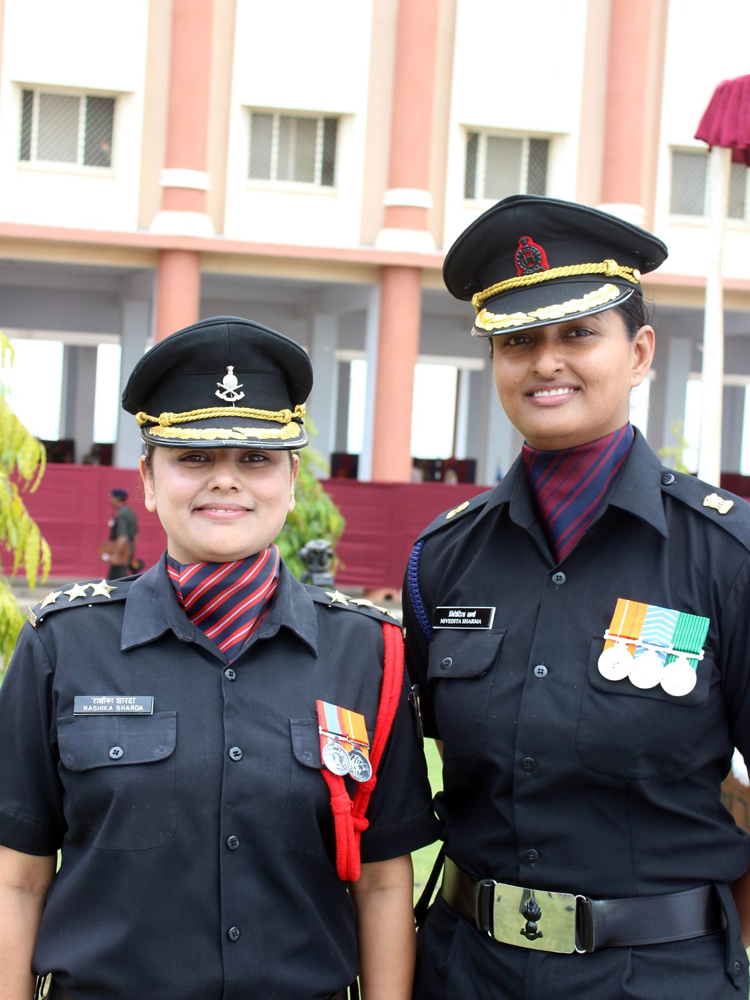

For Ex-Agniveers Ministry of Home Affairs
Built through service.
Ready for what’s next.
An official platform from the Ministry of Home Affairs, bringing career pathways, skills information and transition support for Ex-Agniveers into one place.
Already registered? Sign in to the official portal01 Government of India
Ministry of Home Affairs
Nodal ministry for the further progression of Ex-Agniveers.
02 Programme
Agnipath Scheme
A four-year engagement in the Armed Forces, launched in June 2022.
03 Official platform
Career Progression Portal
The official portal is designed, developed and hosted by NIC.
01 The initiative
Service shapes character.
Opportunity shapes the future.
Service builds capability. The Career Progression Portal exists to help that capability travel — from the Armed Forces into the next professional chapter.
As the nodal ministry under the Government of India (Allocation of Business) Rules, 1961, the Ministry of Home Affairs coordinates activities for the further progression of Ex-Agniveers. The portal is a comprehensive digital platform designed to support that progression and enable a transition from military service to civilian opportunity.
It is built for Ex-Agniveers after their engagement under the Agnipath Scheme — and for the authorised employers, departments and agencies that want to connect with them.
- Who it serves
- Ex-Agniveers released from the Armed Forces under the Agnipath Scheme.
- Who coordinates
- Ministry of Home Affairs, Government of India.
- What it supports
- Access to employment opportunities, skills information and transition resources.
02 Career pathways
Where experience
can take you.
From central police forces to state government roles, private security and further skills development — explore the routes published through the official portal.
Official opportunities
Featured pathwayCAPFs & Assam Rifles
Eligible vacancies notified by the Central Armed Police Forces and Assam Rifles, including information on reserved vacancies and age relaxation for Ex-Agniveers.
View official opportunitiesState & central government
Recruitment notifications from Ministries, Departments and State/UT Governments, published through the official portal.
Official notificationsPSARA-registered employers
Roles with private employers registered under the Private Security Agencies (Regulation) Act.
Private-sector pathwaySkills, training & certification
Information on skill mapping, reskilling and certification, including the Kaushal Praman Patra under NCVET and NSQF.
Skills informationEmployers & departments
Authorised recruiting agencies, government departments, CAPFs, Assam Rifles and empanelled private employers can access the portal to connect with eligible Ex-Agniveers.
Employer accessPathways reflect the scope described on the official Career Progression Portal. Specific vacancies, eligibility and timelines are determined by the recruiting organisation.
03 How it works
From service
to the next step.
A simple route through the official platform — from understanding the initiative to taking the next step.
-
01
Understand
Learn how the initiative supports Ex-Agniveers and what the portal is designed to do.
About the initiative -
02
Sign in
Registration is automatic for released Ex-Agniveers. Use the official login to access your details.
Official login -
03
Explore
Review official notifications, career pathways and skills or training information.
Official portal -
04
Take the next step
Follow the eligibility, application and verification process set by the recruiting organisation.
Official FAQs
Registration
Automatic for Ex-Agniveers already released from the Armed Forces under the Agnipath Scheme.
Sign-in assistance
04 Opportunities & resources
The official
noticeboard.
A snapshot of what the official portal published when this concept was prepared. Always verify current details at source.
Snapshot · 17 October 2026
Official portal · Latest published notice
Verify at source before acting
Indian Air Force · First batch (01/22)
Authentication of Part A and submission of Profile – Part B
The official portal notice states that 23 October 2026 is the last date for Agniveers of the first batch (01/22) of the Indian Air Force to authenticate Part A and submit Profile – Part B.
View on the official portalThis is a design concept. Live listings, deadlines and application processes are maintained only on the official Career Progression Portal.

05 Experience
Carry the
experience forward.
What you carry forward is not only experience — it is capability. The habits built in service are a foundation for the next professional chapter.
- 01 Discipline Consistency, responsibility and composure under pressure.
- 02 Leadership Experience of taking responsibility for people, decisions and outcomes.
- 03 Teamwork Working across roles and backgrounds towards a shared objective.
- 04 Adaptability Operating in unfamiliar conditions and adjusting to change.
- 05 Practical experience Hands-on technical, operational and human skills developed through service.
06 Frequently asked questions
Questions,
answered.
Official answers to the questions Ex-Agniveers and employers ask most often. Reproduced from the Ministry of Home Affairs portal.
Read the full official FAQStill need help?
Visit Contact Us on the official portal or write to jscpg-mha@mha.gov.in.
The Career Progression is a centralized digital platform designed to support Ex-Agniveers after the completion of their engagement under the Agnipath Scheme. The portal facilitates access to employment opportunities, skill certifications, training programs, recruitment notifications and rehabilitation initiatives offered by various Ministries, Departments, Organizations of the Union Government, State/UT Governments and Administrations, as well as Private Security Agencies (Regulation) Act (PSARA).
Registration of all Ex-Agniveers who have already been released from the Armed Forces under the Agnipath Scheme will be automatic on the portal. Registration is also enabled for authorized recruiting agencies, Government Departments, CAPFs, Assam Rifles, State/UT authorities and empanelled private employers.
The portal provides several services, including:
- Employment opportunities in CAPFs and Assam Rifles.
- State and Central Government recruitment notifications.
- Skill mapping and career counselling.
- Access to training, reskilling and certification programs.
- Job opportunities in private sector organizations registered under PSARA.
- Document repository and verification services.
- Notifications regarding reserved vacancies and special recruitment drives.
Ex-Agniveers, after login can update some basic details by using their Service Number, registered mobile number and other authentication credentials provided by the concerned Service Headquarters. Following verification, users can update address, qualifications, certifications etc.
Yes. Eligible vacancies notified by CAPFs and Assam Rifles will be published on the portal. Ex-Agniveers may view eligibility criteria, submit applications through integrated recruitment systems where available and track the status of their applications.
Yes. The portal will display updated information regarding age relaxations, reservation benefits, priority categories and other policy provisions announced by the MoD, MHA, State Governments, CAPFs, Assam Rifles and other participating organizations.
Users can access the Helpdesk section available on the portal for technical assistance, account-related queries and grievance redressal. Support may be provided through email, telephone helplines, ticket-based support systems and designated nodal officers from the concerned Ministries, Services, CAPFs, or State/UT Governments.
Official contacts listed on the portal: jscpg-mha@mha.gov.in · ex-agniveerhelpdesk@mha.gov.in
Answers are reproduced from the official FAQ page and were last reviewed on 17 October 2026. Verify current guidance at source.
07 Next step
Your next chapter
starts with a step forward.
Sign in to the official Career Progression Portal to review your details and the opportunities published for Ex-Agniveers. Authorised employers and departments can use the same portal to access their pathway.